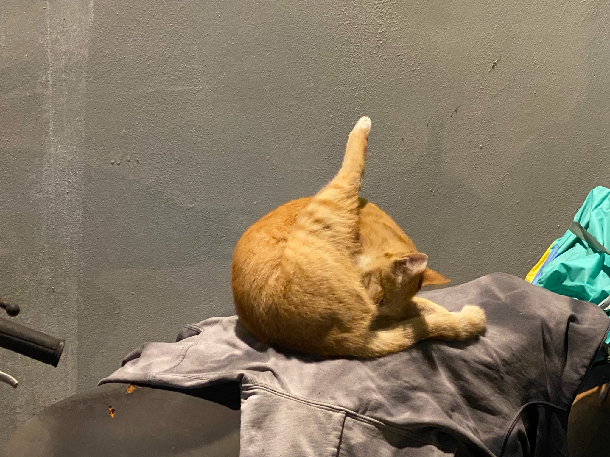
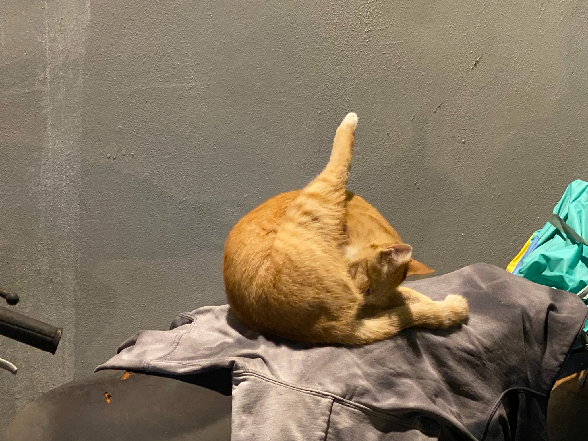

浪浪日誌
May 28th, 2022
舒服的五月。剛飽餐一頓的浪橘誰也不理會，逕自地跳上廢棄的機車上梳洗全身，還在餵食其他浪浪的我抬頭一看，不禁噗疵一笑，便趕緊拿起手機拍下這宛如肥美、鮮嫩烤雞的一幕！迫不及待地想分享給大家看XD 題外話，每當感到疲憊時，只要看到浪浪們一臉滿足，心也富足了：）

舒服的五月。剛飽餐一頓的浪橘誰也不理會，逕自地跳上廢棄的機車上梳洗全身，還在餵食其他浪浪的我抬頭一看，不禁噗疵一笑，便趕緊拿起手機拍下這宛如肥美、鮮嫩烤雞的一幕！迫不及待地想分享給大家看XD 題外話，每當感到疲憊時，只要看到浪浪們一臉滿足，心也富足了：）
